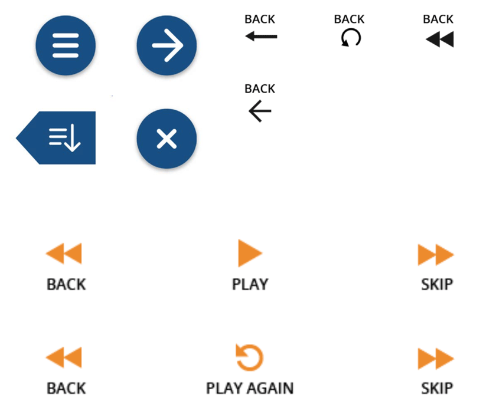
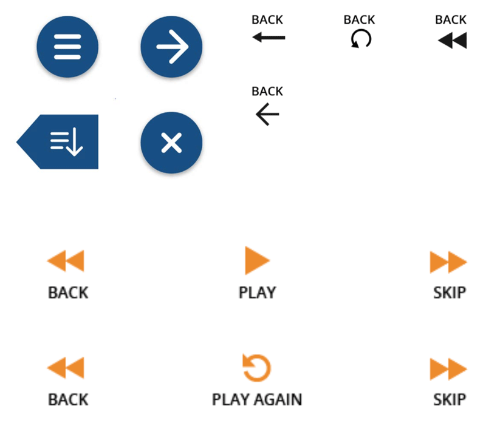

CTAT Redesign
Challenge
To help our clients increase the adoption of CTAT, a tool suite for creating online cognitive tutors, among instructors and instructional designers in higher education settings.
Outcome
Redesign, testing and partial build of CTAT website and tutorials, which increase the understandability and appeal of cognitive tutors and authoring tools. A full research report that can be viewed here.
Role & Contributions
User research
UX design
Visual design
Design documentation
Teammates
Grace Guo
Chris Feng
Siting Jin
Overview
What is CTAT?
The Cognitive Tutor Authoring Tools (CTAT) is a tool suite for creating online cognitive tutors. CTAT allows instructors to easily design digital problem interfaces, and provide contextual help, hints and feedback for students by building behavior graphs for different solution paths. Below are CTAT's current HTML editor, behavior graph, and home page.


Website Redesign
The redesigned website aims to make the CTAT software more approachable and appealing to new users. The latest iteration of our redesign is hosted here. The site hosts several features we worked on as well, including a tutor gallery and tutorials—further explanation below.

Gallery & Tutorials
To help users better learn and adopt CTAT, we added a tutorial gallery and a series of tutorials to the site. The idea behind the gallery is to allow new users to see examples of real tutors made with CTAT, with a live or demo version of that tutor. We determined that potential users thought it would be helpful to see concrete examples of how they could use tutors. The tutorials are designed to onboard users with easy-to-follow steps for building tutors or behavior graphs.


UI Map

Research
Key Findings
We started by identifying major barriers to adoption for technologies like CTAT. We saw that although CTAT is an extremely powerful tool, much of its potential remains undiscovered by novice users for several reasons:
- Users misperceive CTAT’s capabilities. To novice users, it is not immediately obvious what CTAT is good for. The software seems unnecessarily complicated when used to create simpler problem sets (it is more suited for problems with multiple solution paths).
- CTAT incurs too high of a cognitive load. Users feel that CTAT requires too much time to learn, and perceive it as yet another tool for students to keep track of for class.
- There is insufficient support for novice users. The lack of comprehensive online documentation and Q&A platforms creates a substantial barrier for users trying to troubleshoot.
Iterations & Testing
Design Goals
We categorized the main points from our initial research into three phases of CTAT use, and derived our starting set of design goals:
- To help users understand the value of CTAT (pre-use)
- To redesign tutorials for better onboarding (initial use)
- To make the user interface for creating tutors more intuitive (regular use)
Lo-Fi Prototype
For our time frame, we chose to focus on the tutorials. In our initial testing with novices, we noticed that sufficient understanding of intelligent tutor behavior left users impressed and curious about what else CTAT could do, and we suspected that tutorials were an opportunity to provide an understanding of CTAT's intended purpose. Additionally, we sought to reduce the difficulty that new users felt learning CTAT.
We conducted think alouds to test two tutorial formats: 1) concise text instructions supplemented by screenshots, and 2) video with voiceover instructions.


Mid-Fi Prototype
We found that there were advantages and disadvantages to each format. Text provided better explanations, but it was easier to locate features on the screen with video. In the mid-fi stage, we worked to combine the benefits of each format. We hoped to see the text segments help users better understand and remember what they learn, and for the animation to make the tutorial easy to follow. We conducted 6 think alouds to test this iteration.
Hi-Fi Prototype
Our mid-fi testing showed that our tutorial was more appealing to new users than CTAT's current tutorial pages. The discrete steps and more visual nature made it feel more approachable. We also receive a fair amount of critique to improve more specific aspects of our current design.
Specifically, we aimed to address:
- Tutorial navigation: Users should be able to see an overview of contents and navigate between steps.
- Tutorial content: The tutorial needs additional segments to give users more clarity and understanding.
- Tutorial copy: Our copy should more effective in making each step as clear as possible.

In addition, we realized that the tutorial alone was not enough to educate users about CTAT's purpose. We wanted to build a system around the tutorials to provide more context. We nested them in a website that would provide information on CTAT before users reached the tutorials, based on our finding that understanding of CTAT's functionality leads to interest in learning it. This feedback and analysis led to the final iterations shown above.
Other Iterations
Typography & Icons
 

Highlighting Components


Layout


Web Pages


Learning Outcomes
- Determining a design direction from open-ended research
- Usability testing and iterative design
- Balancing self-guided work and clients' wishes
Reflection
Within our limited time frame, we were not able to fully test the effectiveness of our tutorial redesign on CTAT adoption. While our user testing has shown that the site redesign and the new tutorials made it easier for novice users to understand CTAT’s capabilities, there remains the possibility that this may not translate into increased adoption of CTAT over time.
Some possible next steps for this project might include:
- Deploying and evaluating the long-term effect of the new website and its features on CTAT adoption. A good indication of tutorial effectiveness could be a correlated upward trend between tutorial views and CTAT users and tutors created.
- Creating a greater range of tutorials. Users who are considering CTAT for its superior flexibility may want to learn how to use a wider range of features, including advanced topics like dynamic interfaces. Tutorials that can make these complex features more learnable would appeal to these users and help them create effective tutors for a diverse range of domains.